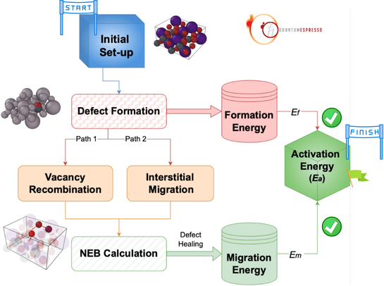
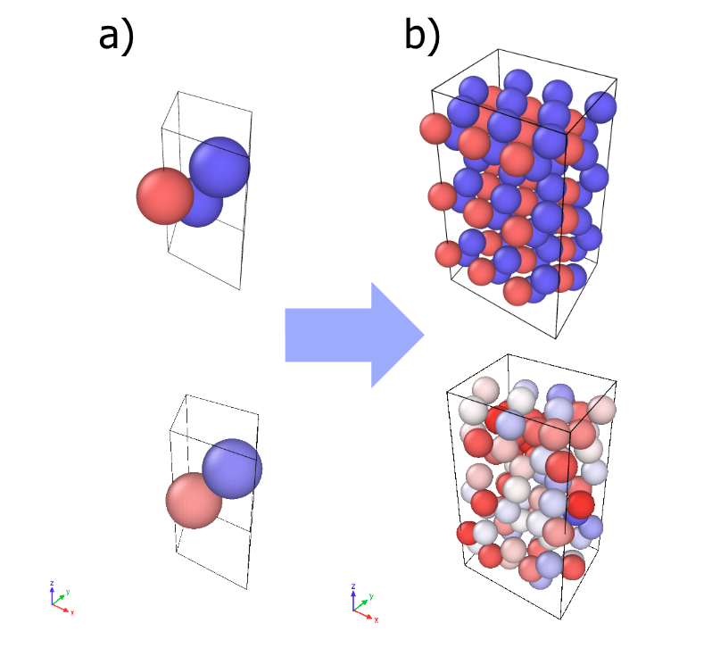
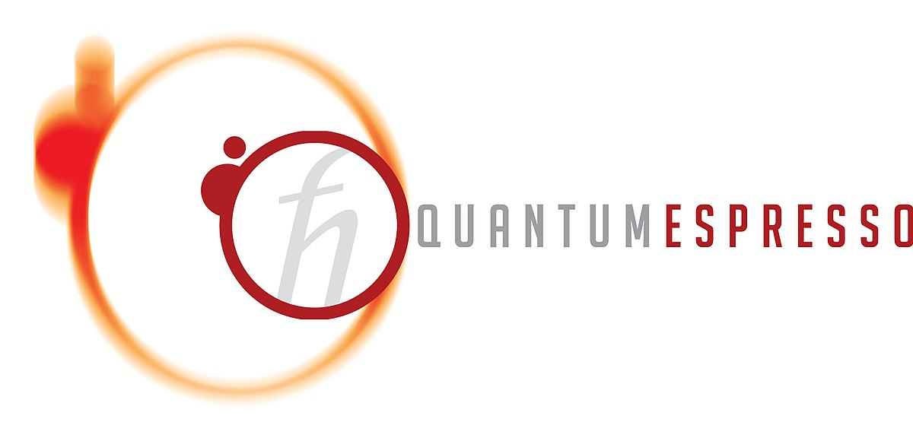
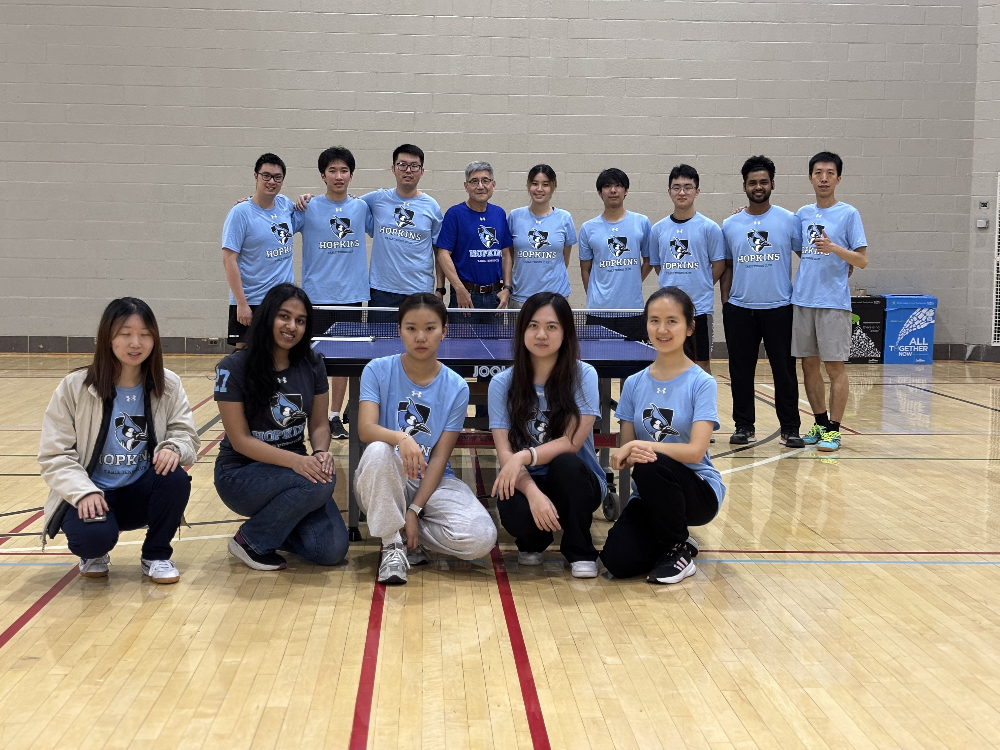
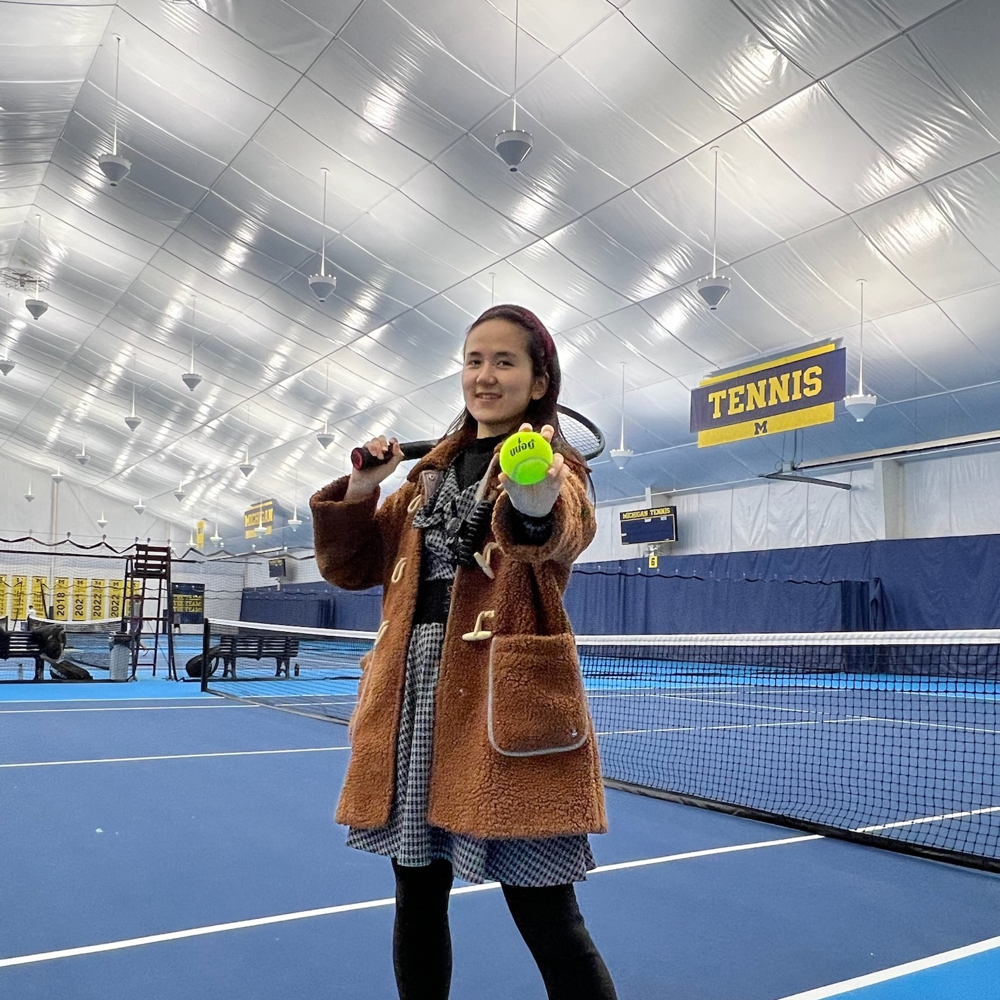

DFT Convergence Tips
Practical strategies for achieving convergence in challenging DFT calculations, including mixing schemes and initial guess optimization.
Read MoreSharing technical insights from my research and glimpses of life beyond the lab — from DFT convergence tricks and ML force field tutorials to table tennis, tennis, and campus photography.

Practical strategies for achieving convergence in challenging DFT calculations, including mixing schemes and initial guess optimization.
Read More
A beginner's guide to implementing machine learning force fields using ASE and MACE for molecular dynamics simulations.
Read More
Collection of Python scripts for automating Quantum ESPRESSO workflows, from input generation to data analysis.
Read More
Creating publication-quality figures for band structures, density of states, and crystal structures using matplotlib and plotly.
Read More
From beginner to competitive player - lessons learned on and off the table, and how sports complement research life.
Read More
Why I decided to pick up tennis during my PhD and the surprising parallels between mastering a sport and research.
Read MoreCapturing the beauty of JHU's Homewood campus through the seasons - a photographer's perspective.
View Gallery
Exploring DC, Boston, Bellevue, and beyond - combining conference attendance with street photography.
View Galleryrelax.out for energiesimport re
from ase.io import read
# Read the last structure from Quantum ESPRESSO output
atoms = read('relax.out') # Automatically reads the last image
# Total energy in eV
energy_eV = atoms.get_potential_energy()
# Lattice parameters
cell = atoms.get_cell()
a, b, c = cell.lengths() # in Ångstrom
alpha, beta, gamma = cell.angles() # in degrees
print(f"Total Energy: {energy_eV:.6f} eV")
print(f"Lattice Parameters (a, b, c): {a:.6f}, {b:.6f}, {c:.6f} Å")
print(f"Lattice Angles (α, β, γ): {alpha:.2f}°, {beta:.2f}°, {gamma:.2f}°")import numpy as np
def extract_bandgap_from_qe_output(filename='bands.out'):
with open(filename, 'r') as f:
lines = f.readlines()
fermi_energy = None
band_energies = []
kpoints = []
current_kpoint_bands = []
for line in lines:
if 'the Fermi energy is' in line:
fermi_energy = float(line.split()[-2]) # in eV
elif 'k =' in line:
if current_kpoint_bands:
band_energies.append(current_kpoint_bands)
current_kpoint_bands = []
k_line = line.strip().split()
kpt = list(map(float, [k_line[2], k_line[3], k_line[4]]))
kpoints.append(kpt)
elif line.strip() and len(line.split()) == 2:
band_energy = float(line.split()[1])
current_kpoint_bands.append(band_energy)
if current_kpoint_bands:
band_energies.append(current_kpoint_bands)
band_energies = np.array(band_energies)
if fermi_energy is None:
raise ValueError("Fermi energy not found in file.")
shifted_energies = band_energies - fermi_energy
vbm = np.max(shifted_energies[shifted_energies <= 0])
cbm = np.min(shifted_energies[shifted_energies >= 0])
band_gap = cbm - vbm if cbm > vbm else 0.0
print(f"Fermi energy: {fermi_energy:.6f} eV")
print(f"Valence Band Maximum (VBM): {vbm:.6f} eV")
print(f"Conduction Band Minimum (CBM): {cbm:.6f} eV")
print(f"Band Gap: {band_gap:.6f} eV")
if band_gap == 0.0:
print("This material is metallic.")
else:
vbm_k = np.where(shifted_energies == vbm)[0][0]
cbm_k = np.where(shifted_energies == cbm)[0][0]
print("Direct band gap." if vbm_k == cbm_k else "Indirect band gap.")
extract_bandgap_from_qe_output('bands.out')Live preview appears here as you type.
Get updates when I post new content:
2025 Yi Cao. This work is licensed under CC BY-NC-SA 4.0.